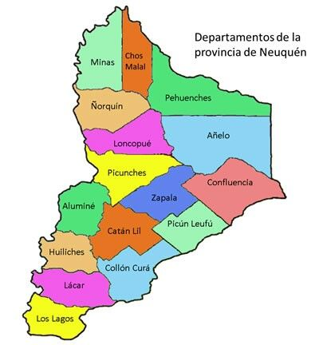

En este espacio se desarrollara una pagina web destinada a mostrar hermosos paisajes de la patagonia mientas se aprende a programar.
Con el objetivo de conocer hermosos lugares mientras diseñamos un bonito sitio web.
Acerca de la Provincia
La ciudad de Neuquén, capital de la provincia homónima, es el centro urbano más importante de la Patagonia argentina. Con una población que supera los 350.000 habitantes, es una ciudad joven, dinámica y en constante crecimiento. Su ubicación estratégica entre los ríos Limay y Neuquén le otorga un entorno natural único, donde conviven áreas urbanas modernas con espacios verdes, senderos costeros y balnearios ideales para disfrutar todo el año.
Neuquén se caracteriza por un clima semiárido, con veranos calurosos que suelen superar los 30 °C y inviernos fríos pero secos, con temperaturas que rondan los 0 °C durante las noches. La ciudad recibe pocas precipitaciones, lo que favorece días despejados y cielos intensamente azules, típicos de la región patagónica.
En cuanto a su historia, Neuquén es una ciudad relativamente joven: fue fundada en 1904, cuando se convirtió en la capital provincial. Su crecimiento se aceleró gracias al ferrocarril, la agricultura bajo riego y, más recientemente, el desarrollo energético de la región. Hoy es un punto clave para la actividad petrolera y gasífera, especialmente por su cercanía a Vaca Muerta, una de las reservas de hidrocarburos no convencionales más importantes del mundo.
A pesar de su modernidad, Neuquén conserva una identidad cultural marcada por la presencia de comunidades mapuches, la tradición patagónica y una vida urbana vibrante. Museos, parques, ferias, gastronomía regional y una costanera cada vez más desarrollada hacen de la ciudad un excelente punto de partida para explorar los paisajes más espectaculares de la provincia.

Mapa de los Departamentos que conforman la Provincia - Neuquen
Cultura de Neuquén
La cultura neuquina es una mezcla vibrante entre tradición patagónica, raíces mapuches y la modernidad de una ciudad en crecimiento. Neuquén capital es un punto de encuentro donde conviven expresiones artísticas, festivales, ferias y una vida urbana activa.
La presencia de comunidades mapuches aporta una identidad profunda: su cosmovisión, artesanías, tejidos, ceremonias y el valor espiritual de la naturaleza forman parte del patrimonio cultural de la región. En la ciudad, esta influencia se refleja en museos, centros culturales y eventos que celebran la historia ancestral.
Neuquén también tiene una fuerte vida artística. El Museo Nacional de Bellas Artes, uno de los más importantes del país fuera de Buenos Aires, ofrece exposiciones permanentes y temporarias. A esto se suman teatros, ferias de artesanos, festivales de música y espacios públicos donde se realizan actividades culturales durante todo el año.
La identidad neuquina se completa con su espíritu patagónico: respeto por la naturaleza, vida al aire libre, deportes, senderismo y una comunidad que valora el entorno natural como parte esencial de su día a día.
Cosas curiosas de la Provincia
Es una de las provincias con más hallazgos de dinosaurios en el mundo
El volcán Lanín es considerado un símbolo espiritual por comunidades mapuches
Villa Traful es uno de los pocos lugares del país con un bosque sumergido
El Salto del Agrio tiene color rojizo por minerales volcánicos
El Bosque de Arrayanes es único: no existe otro igual en el planeta.